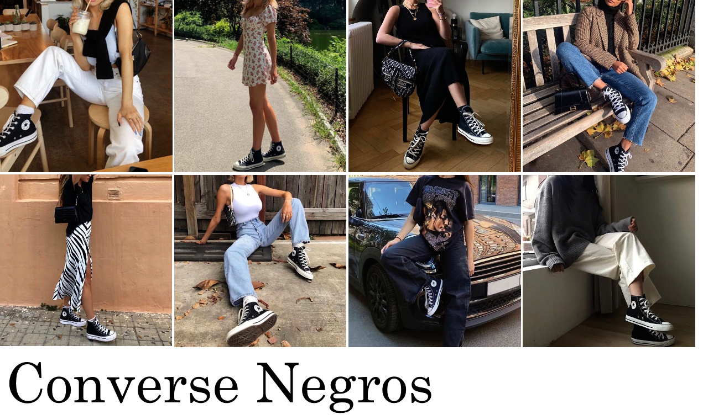
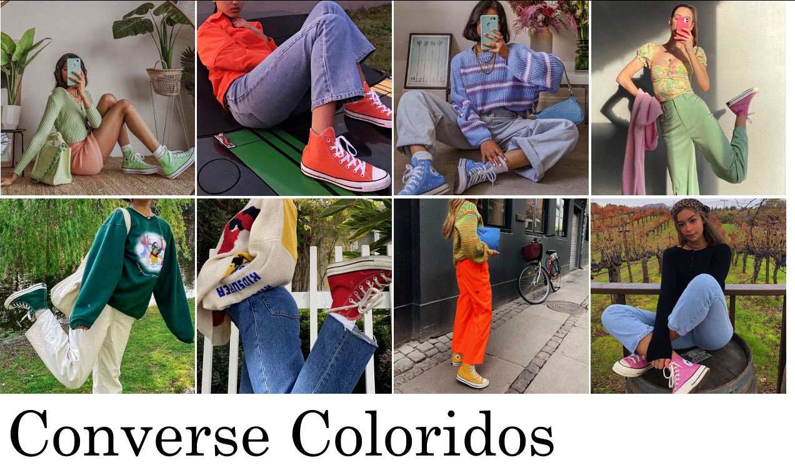

¡Estos tenis son un clásico! Aparte de ser tan cómodos (y baratos), son perfectos para un look de calle, se pueden utilizar de muchas formas, y aparte son famosos por el hecho de ser unos tenis cómodos para patinar. Combínalos con unos jeans, shorts, pantalones e inclusive con algun tipo de falda o vestido.
 